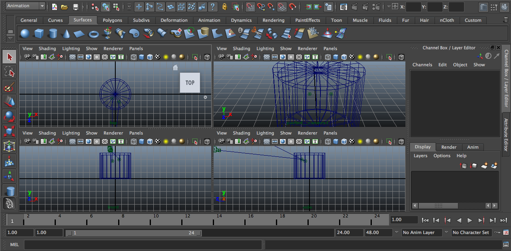

What are 3D Orthographic Objects?
Unlike normal 3D objects that are rendered on a display through projection matrix operations (See 3D Projection), 3D Orthographic Objects precalculate specific camera values in order to display a 3D effect without using geometric primitives.
In our case, we used Autodesk Maya in order to obtain angle values for a fixed camera. Those values are then give to a ratio based function in order to display the orthographic views for our 3D Cylinder
The angle for the camera is used in order to obtain the values of the main composite path of the cylinder, as well as the Ry value of both ellipses. We then obtain the angle between the difference of the ellipsis Rx in order to be able to display a content inside our cylinder.
Demo Usage and Docs
CylinderJS is a RaphaelJS plugin, which means its required in order to work. After importing the RaphaelJS library, you can create a cylinder through the following directive
var paper = Raphael('demoCylinder', '690', '160');
var cylinder = paper.cylinder(
x, // (int) Initial x location of the cylinder
y, // (int) Initial y location of the cylinder
topWidth, // (int) Width of the top lid of the cylinder
bottomWidth, // (int) Width of the bottom lid of the cylinder
cylinderHeight, // (int) Height of the cylinder
CyRotation, // (int) [0-100] Camera value give to calculate the orthographic view
hasContent, // (boolean) -Optional- Whether the cylinder has a content
percentageContent, (int) [0-100] -Optional- Percentage of the content related to the cylinder
padding (float) [.15-1] -Optional- Padding between content and cylinder
);
Creating a basic cylinder
var c1 = rsr.cylinder(x, y, 10, 40, 80, 90, true, 60);
var c2 = rsr.cylinder(x+200, y, 40, 40, 80, 40, true, 30);
Add color (Only to content)
c1.attr({content: {fill: "rgba(15, 55, 86, .5)"}});
c2.attr({content: {fill: "rgba(229, 130, 0, .5)"}});
Modifying percentage (Only to content)
c1.attr({content: {percentage: 10}});
c2.attr({content: {percentage: 80}});
Animate percentage change (Only to content)
c1.animate({content: {percentage: 10}});
c2.animate({content: {percentage: 80}});
Animate color change (Only to content)
c1.animate({content: {fill: "rgba(242, 203, 185, .5)"}});
c2.animate({content: {fill: "rgba(64, 191, 1, .5)"}});
Different speed animation
c1.animate({content: {ms: 10000}});
c2.animate({content: {ms: 100}});
Making it draggable (Grab through cylinder, not the content)
c1.draggable();
c2.draggable();
Display cylinder volumen (in millimeters)
c1.displayVolumen();
c2.displayVolumen();
Transfer content between cylinder
c1.transferable();
c2.transferable();
Transfer content between multiple cylinders
c1.transferable();
c2.transferable();
c3.transferable();
c4.transferable();
c5.transferable();
Join cylinders to create complex objects
c1.join(c2);
Join multiple cylinders and transfer between them
c1.join(c2);
c1.transferable();
c2.transferable();
Objectives, Roadpmap and Support
CylinderJS was created with a goal on mind: allow 3D interaction with mobile applications through Javascript. Current 3D solutions such as WebGL are still not wide supported, while performing the entire Graphics Pipeline in Javascript is too consuming for a mobile CPU. By "rendering" the orthographics views of a 3D object, we can manipulate and interact with cylinders without having to render each view on every manipulation.
Cylinder JS it's still a work on progress. You will find inefficient code, no comments and logs to console in the code. Please allow some time while I wrap a release version. You are entitled to use it for free in the meantime as well as to reach me atme@jjperezaguinaga.com for any comments on the project.